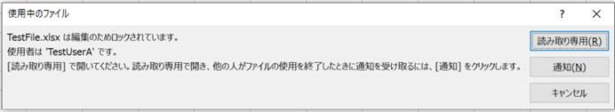

こんにちは、Office サポート チームの半田です。
この記事では、Office ファイルを開こうとすると、実際に開いているユーザーとは
異なるユーザーが使用中と表示されることがある事象と、その対処策について説明します。
現象
通常、既に別のユーザーが開いているファイルを開こうとすると、以下のように別のユーザーがファイルを編集中である旨のメッセージが表示されます。
このとき、実際には TestUserA がファイルを開いていないにも関わらず TestUserA がファイルを使用中と表示されたり、
誰も当該ファイルを開いていないにも関わらず、別のユーザーがファイルを使用中と表示される事象が発生することがあります。

Office の動作について
この事象の原因と対処策について説明する前に、関連する Office の動作について解説します。
基本的に、Office アプリは既存のファイルを開く際、開こうとしているファイルが存在するフォルダ内に
~$<ファイル名> という名前の一時ファイルを作成し、この ~$ つきの一時ファイルに自身のユーザー名を記録します。
例えば、”TestFile.xlsx” というファイルを開く場合は、”~$TestFile.xlsx” という一時ファイルを作成して、自分自身のユーザー名を記録します。
(補足: *.xls や Access ファイルなどの一部の Office ファイルについては、開いても ~$ つきファイルは作成されません)
これにより、既に別のユーザーによって開かれている Office ファイルを開こうとすると
同フォルダ内に存在する ~$ つきファイルに記録されているユーザー名を確認することで
当該のファイルが誰によって開かれているか確認/通知することが可能になっています。
なおこの ~$ つきのファイルは、対応する Office ファイルが閉じられると同時に削除されます。
考えられる原因
Office アプリは、開こうとしているファイルと同じフォルダに、対応する ~$ つきの一時ファイルが存在しないか確認し、
存在している場合、そのファイル内に記録されているユーザー名をもとに、誰がファイルを開いているのか通知します。
この ~$ つきの一時ファイルは、対応する Office ファイルが閉じられると同時に削除されることが期待されますが
Office がクラッシュしたり、クライアント - ファイルサーバー間の接続が突然切断されるなどの予期しない動作が発生した場合、
削除されずに残存する場合があります。
この場合、予期せず残存した ~$ つきファイルに起因して、実際とは異なるユーザーがファイルを使用中と表示されたり
誰も当該ファイルを開いていないにも関わらず、別のユーザーがファイルを使用中と表示される事象が発生することがあります。
検討される対処策
~$ つきファイルの残存に起因して発生している事象については、この ~$ つきファイルを削除することで改善することが期待できます。
なお、エクスプローラーで ~$ つきファイルを表示させるためには、[フォルダー オプション] – [表示] から、以下の設定を行う必要があります。
・[隠しファイル、隠しフォルダー、および隠しドライブを表示する] : [有効]
・[保護されたオペレーティング システム ファイルを表示しない (推奨)] : [無効]
また、~$ つきのファイルは、ファイルを開いているユーザー情報を格納するためのファイルであるため
このファイルを削除しても、元の Office ファイルの情報が欠落することはありません。
今回の投稿は以上です。
本情報の内容 (添付文書、リンク先などを含む) は、作成日時点でのものであり、予告なく変更される場合があります。